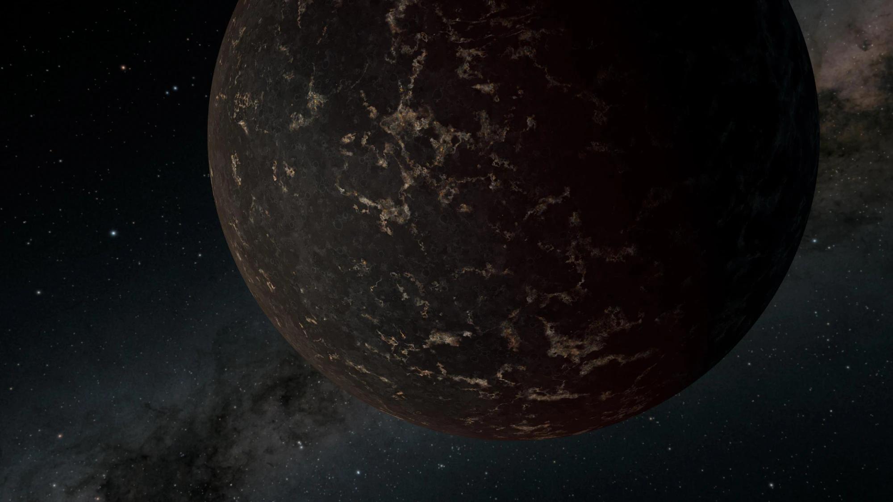
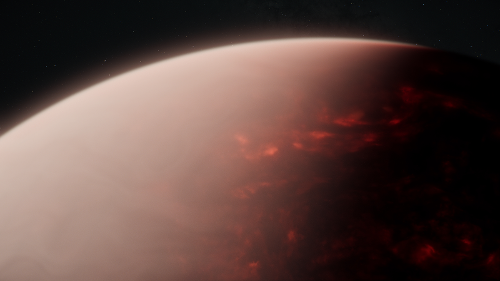
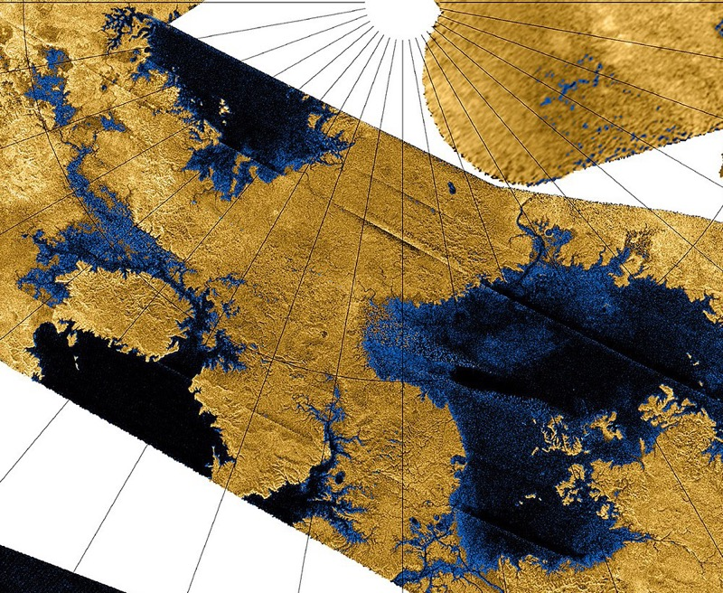
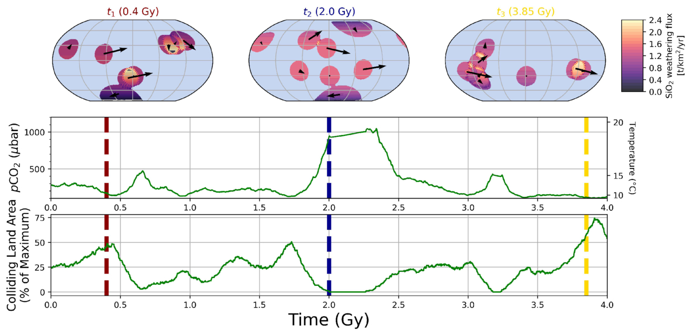

Exoplanet Surfaces
I study the smallest known planets outside of our Solar System using infrared observations from JWST to uncover what their surfaces are made of, and whether they look like the Moon and Mercury in our own Solar System.
Department of the Geophysical Sciences · University of Chicago
I’m a PhD student at the University of Chicago studying the atmospheres, surfaces, and habitability of small rocky exoplanets with the James Webb Space Telescope (JWST) using first-principles modeling. I am also interested in the atmosphere of Saturn’s moon Titan.
Hello! I’m Brandon Park Coy, a PhD student in Geophysical Sciences at the University of Chicago. My research interests lie in the habitability and atmospheric composition of small extrasolar planets (exoplanets), as well as the atmosphere of Titan.
I’m advised by Professor Edwin Kite (Geophysical Sciences) and Professor Eliza Kempton (Astronomy & Astrophysics). I earned my B.A. in Astrophysics from UC Berkeley in 2019 and an M.S. in UChicago’s Physical Sciences Division in 2022. I’ve also spent about a year and a half as a research intern at NASA at the Jet Propulsion Laboratory, Goddard, Marshall and Ames.

I study the smallest known planets outside of our Solar System using infrared observations from JWST to uncover what their surfaces are made of, and whether they look like the Moon and Mercury in our own Solar System.

Many small planets are hot enough to host magma oceans, leading to exotic atmospheric chemistry. I am the Principal Investigator for JWST GO Program 6284, looking for signs of chemical interaction between the hot, young sub-Neptune HD 207496 b’s hydrogen-rich atmosphere and its magma interior. I also study the thermal emission and reflected light from ultra-hot rocky lava worlds. As part of JWST GO 4818, we found an atmosphere on the coldest one of these objects to date, HD 3167 b.

Titan is the only moon in the Solar System with a significant atmosphere, and its frigid surface hosts a methane cycle much like Earth’s water cycle, with methane rain and expansive lakes. At NASA Goddard, I used Spitzer Space Telescope data to find new signatures of propene in Titan’s atmosphere. As part of the JWST Titan team, I contributed to a paper detecting CH3 and direct cloud formation on Titan for the first time.

What keeps a planet habitable over billions of years? On Earth, the carbonate–silicate weathering feedback regulates CO2 and climate, but it needs a steady resupply of fresh surface rock. Using DISKWORLD, a model I developed, I found that random tectonic collisions alone are likely not enough — processes like wind-driven dust transport, glacial erosion and seafloor weathering are probably needed too.